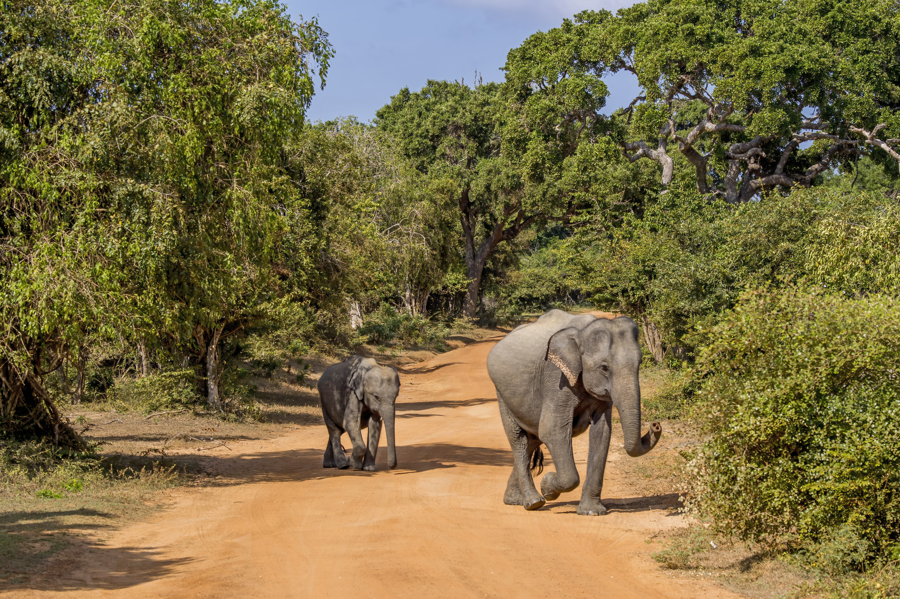
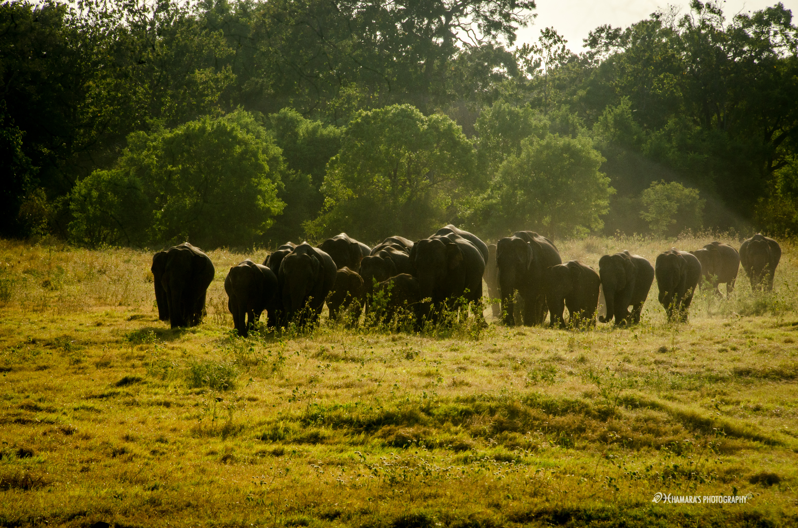

WELFARE BEYOND
CAPTIVITY
Understanding the behavioral, physical, and ecological realities of free-ranging wild megafauna versus managed captive care, transit rehabilitation facilities, and conservation sanctuaries in Sri Lanka.

Free Herd Matriarch "Radha"
Wild vs. Captive Welfare Matrix
Biomechanical, metabolic, and sociometric disparity benchmarks drawn from longitudinal telemetry and zoological records across dry-zone habitats versus permanent domestic institutions.
50 – 250 km² Seasonal Home Ranges
Continuous roaming over diverse terrain promotes natural sole wear, bone density, continuous muscular toning, and healthy digestive motility.
< 0.05 km² Restricted Paddocks
Stationary confinement on hard surfaces, earth pens, or chain tethering restricts natural gait cycles, precipitating severe arthritis and pododermatitis.
Multi-Generational Kinship Herds
Deep inter-generational learning led by senior matriarchs, allomothering of calves, shared acoustic infrasound networks, and mourning rituals.
Solitary or Artificial Assemblages
Forced pairings devoid of kinship ties, early maternal calf severance, suppression of bull dispersal, and fractured communications.
150+ kg Daily Multi-Species Flora
Grasslands, rough fibrous barks, wild ficus foliage, medicinal tubers, and mineral clay licks. Foraging engages trunk dexterity for 12–18 hours daily.
Monoculture Fodder & Kitul Palms
Kitul (Caryota urens) high in simple sugars, coconut fronds, limited fresh greens. Consumption takes <3 hours, causing boredom and dental malocclusion.
Virtually Non-Existent (0%)
Stress events are acute (predator threats, drought treks, human conflict) followed by systemic neurological reset and herd solace.
Chronic Weaving & Trunk Bobbing
Repetitive rhythmic swaying, foot shifting, and bar-chewing signify severe neuro-endocrine distress caused by isolation and physical tethering.
Environmental & Anthropogenic
Mortality driven by gunshot wounds, explosive jaw traps (Hakka Patas), train strikes, electrocution, and drought malnutrition.
Degenerative & Metabolic
Chronic footpad abscesses, osteomyelitis, colic, obesity, tusk-trim infections, and premature reproductive senescence.
Five Domains of Megafauna Welfare
Adapted from Mellor et al. (2020) for Sri Lankan Asian elephants, translating physical inputs into resulting internal mental states.
Nutrition & Water
Access to ad-libitum clean fresh water, seasonal browse selection, high-roughage fiber, and unhurried ingestion cycles.
Environment
Thermal shade canopy, natural soft earthen substrata, mud wallows for thermoregulation, and protection from noise pollution.
Physical Health
Absence of tether lesions, robust joint flexibility, intact skin integument, and proactive parasite surveillance.
Behavioral Choice
Agency over when to bathe, dust, sleep, explore, or withdraw. Autonomy to associate or avoid conspecifics.
Mental State
The aggregate cognitive sum of domains 1–4: positive affective equilibrium versus despair, apprehension, and learned helplessness.
Rehabilitation Centers in Sri Lanka
Contrasting national facilities: from the peer-rearing wild integration protocol at Udawalawe to the complex heritage and evolving welfare standards at Pinnawala.
Elephant Transit Home • Ath Athuru Sevana

Founded in 1995 under Dr. Nandana Atapattu, ETH treats orphaned wild calves stranded due to human-elephant conflict, wells, or mother mortality. Keepers administer milk formula via sterile chutes dressed in camouflage to prevent filial bonding with humans. Calves roam freely within 200 hectares of scrub jungle bordering Udawalawe Reservoir, forming peer-group alliances that persist long after their GPS-collared re-entry into national parks.
Pinnawala Elephant Orphanage

Established in 1975 on a 25-acre coconut plantation, Pinnawala gained global renown for captive breeding achievements and twice-daily communal bathing in the Maha Oya. However, contemporary megafauna welfare science scrutinizes its legacy: long-term chaining regimes outside viewing hours, lack of wild reintroduction, and high visitor density.
Gradual replacement of restrictive night chains with large, open social enclosures.
Curtailed public bottle-feeding rituals to reduce tourist handling proximity.
Nutritional diversification away from monoculture kitul toward enriched forage.
Legal & Regulatory Safeguards
Sri Lankan wildlife protection constitutes one of Asia’s oldest statutory regimens, fundamentally anchored by the Fauna and Flora Protection Ordinance (FFPO) and landmark superior court jurisprudence.
Recent rulings by the Sri Lankan Court of Appeal (e.g., CA/Writ/394/2021) and Supreme Court interventions stayed the release of captured wild calves back to illegal claimants. The judiciary affirmed that wild tuskers remain state property held in public trust, invalidating forged captive registration books.
Total Wild Protection
Strict prohibition against the killing, wounding, taking, or keeping of any wild elephant without an exceptional ministerial permit issued solely for scientific rescue.
Mandatory DNA Registry
Compulsory microchipping and DNA profiling with the Department of Wildlife Conservation to extinguish the laundering of wild-caught calves into domestic logbooks.
Working Elephant Standards
Regulations mandating 2.5-hour maximum daily work limits for logging, prohibition of pregnant elephant labor, and mandatory daily 2-hour river bath intervals.
Cruelty Sanctions
Statutory modernization replacing 1907-era Prevention of Cruelty to Animals fines with substantial custodial sentences and confiscation of abused animals.
Ethical Elephant Tourism Field Guide
Every ticket purchased directly incentivizes either wildlife exploitation or sanctuary conservation. Use this interactive field diagnostic to audit facilities across Sri Lanka before visiting.
Sanctuary Verification Diagnostic
Check observable criteria to evaluate the facility tierSelect observed conditions above
- • Any commercial facility offering elephant rides or elephant polo.
- • Young calves chained by two legs swaying continuously in concrete stalls.
- • Venues self-branded as "Sanctuary" or "Orphanage" that breed elephants for visitor exhibits.
- • Mahouts carrying heavy metal rods or concealed nails in hand grips.
Experience Them Wild & Free
Sri Lanka is blessed with pristine national parks where elephants roam in natural splendor. Choose ethical safari drives with licensed naturalist guides at: